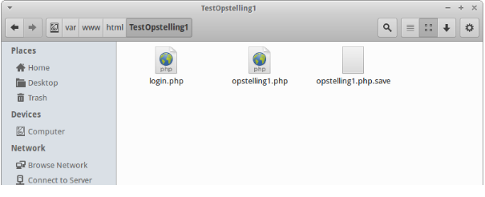
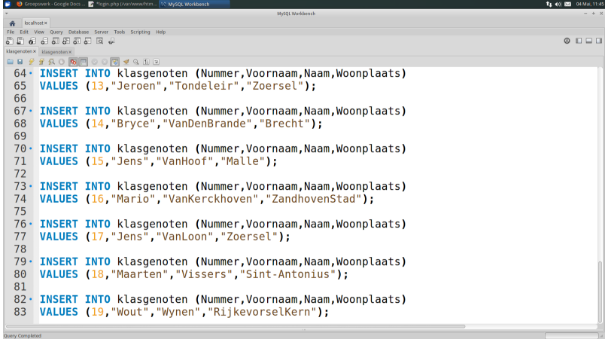
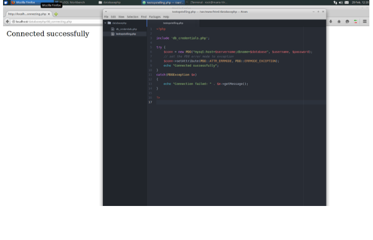

GIP site Wout Wynen


Deze opdracht is samen gemaakt met Mario en Greg:
Mario vanKerckhoven
Greg Groenvynck
Bij het creëren van de testopstelling hebben we vooral met Linux Xubuntu gewerkt.
Een mogelijk alternatief was de Windows server met IIS, maar hier doken enkele problemen op in verband met het maken van de connectie tussen de database en de webpagina.
Om de webpagina lokaal te kunnen testen op de Xubuntu hebben we gebruik gemaakt van apache2.
Handig hieraan is dat het samen met de Virtuele machine word opgestart en dat je bestanden altijd gehost worden.
De bestanden die gehost worden plaats je in de var/www/html map van het Device “Computer”.
Om in deze map te geraken moet je wel een programma installeren via Sudo apt-get install Nautilus.
Eenmaal je bestander hier gezet kan je ze ook nog steeds aanpassen.

Php is verder een zeer handige programmeertaal aangezien het de mogelijkheid bied de verbinding met mysql op eenvoudige manier te maken.
Echter moet je je ervan bewust zijn dat je de queries goed laat aankomen en dat ze “hackproof” zijn tegen sql injection attacks.
Als testopstelling hebben we ook het opensource-managementsysteem voor databases namelijk MYSQL gebruikt.
Omdat we willen testen dat wanneer je een klasnummer ingeeft de gebruikt een leerling terugkrijgt , moeten we met een database werken.
We hebben in MYSQL Workbench een database ‘testopstelling’ met een tabel ‘klasgenoten’ gemaakt met hierin verschillende query’s.
Het werken met MYSQL is in het algemeen goed verlopen. We hebben kleine problemen gehad met het installeren van PhpMyAdmin was moeilijk verlopen.
Nadat dit was gelukt hebben we geen enkel probleem meer gehad.
De code in MYSQL zelf was ook niet moeilijk omdat we dit met het vak software ook al veel met SQL bezig geweest zijn.

Je kan zelfs een code genereren zodat je zelf de code niet moet schrijven.
Dit heeft wel een nadeel omdat je wanneer je een fout hebt of een query moet toevoegen, je geen idee hebt hoe dit werkt en dus ook een nieuwe tabel zal moeten maken.
Php en mysql kan werken met een mysql database door het gebruik van MySQL extension of een PDO (PHP data objects).
Zowel MySQL en PDO hebben hun voordelen. MySQLi zal alleen werken met SQL databases en PDO kan met 12 verschillende databases werken.
Als je moet switchen tussen verschillende databases is het het best om dus PDO te gebruiken aangezien de verschillende databases die je kan gebruiken.
Met MySQLi moet je de hele code herschrijven wat een voordeel is en ook een nadeel.
Het voordeel is dat je zelf de specificaties kan schrijven het nadeel is dit vraag veel kennis werk en moeite.
Beiden zijn object georiënteerd maar MySQLi bied een API aan.

We hebben uiteindelijk ook nog een filmpje gemaakt met ons resultaat.
Het filmpje staat op youtube maar vindt u ook hieronder.
10 May 2016